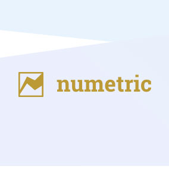
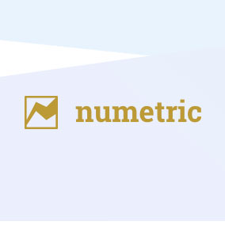

Demand Gen
industry
experts
B2B demand generation is not a new concept, but it’s one that can be approached in new ways. Ultimately, demand gen is the process of collecting leads on new business. There are countless ways to approach demand generation. With big data, in-depth analytics tools and more resources at your fingertips, demand gen has never had a more direct correlation to your company’s bottom line than it does today. However, you can only contribute to that revenue stream once you have properly structured your marketing efforts around demand gen. Relic’s digital team has been perfect demand gen for a while, and we’ve even learned a thing or two along the way. So what do we do that makes us experts in demand gen? Oh boy, we’re glad you asked.

Foundation Five
Demand gen is best described as the marriage between marketing programs and a structured sales process. Like any marriage, issues can often arise due to the lack of communication. Someone in marketing can have a different idea for the brand message than someone in sales, and the problems snowball from there. Your marketer accidentally leaves the brand message on the counter and the salesperson confronts the marketer because they KNOW that the brand message is supposed to be kept in the fridge. Eventually, the issues cause such a large divide that the interns are forced to choose sides in court, and that’s not fair to them. Think of the interns.
So how do you unify the message to prevent that communicational disconnect? That’s what Relic is here for. Start by asking what we call the “Foundational Five” questions:
- 1. Who are you selling to?
- 2. What are you selling?
- 3. How do businesses buy?
- 4. Who participates in buying?
- 5. How are leads defined and measured?
By having companywide answers to these questions, the marketing, product and sales departments will be effective in engaging buyers.

So, you’ve identified your brand and campaign message and you’ve communicated it clearly throughout the company? Perfect, let’s move on.
The next step is to share the unified brand message with your target audiences. If you look at the infographic below (or left or right or above or whatever), you’ll notice that everything we do revolves around the brand message. Relic’s team then puts the demand gen campaign through the following steps:
- 1. Content/Offering. Make like Usain Bolt and separate yourself from the competition, and maybe even give them a smug look along the way. Determine what your value proposition is selling.
- 2. Channel Delivery. This step finds the best channels to share the brand message with the audience, whether that be direct mail, digital, email or anything else.
- 3. Web/Landing Pages. Remember that unified message we talked about earlier? That applies to your website as well. Ensure that the website is consistent with the rest of your messaging.
- 4. Automation. Robots may be slowly taking over the world, but for now we’ll let this one do its job. By using technological tools and resources, automation will simplify and streamline the process of contacting those interested in the product or business.
- 5. Sales Enablement. Ensure that the sales team has all the necessary tools to be successful, whether that means updated tech, correct information or delicious snacks. Your team has to be able to do their job.
- 6. Analyze. Here’s where you measure the success of the entire campaign. Analyze what was successful and what was not, make the necessary adjustments and move forward with your plan of attack.
The demand gen cycle is a continuous process that must be tweaked and improved. As time goes on, the process will never fully be complete, but it will always improve, like a fine wine. Or Angelina Jolie.
A prospective customer typically works through three phases before becoming a buyer. However, unlike the phases of the moon, your customers won’t turn to werewolves at the end (definitely a positive). Relic’s demand gen funnel takes a company through those three phases to convert potential customers into avid buyers. The three phases of the funnel are awareness, consideration and purchase
- 1 .Awareness. Generate a general awareness about the company. Put yourself in the back of your audience’s minds so that the next time they hear about you, they’re much more intrigued at the prospect of purchasing.
- 2 .Consideration. This is where you demonstrate your value. The market has a need and your business has the solution to that need. Set yourself apart from the competition and show that you are the best option available.
- 3 .Purchase. Potential customers have considered buying, but they need that last final push. Give them what they need to get over the edge and become a paying customer and keep them coming back.
You may have noticed that this funnel could also potentially be good advice for dating. We’re not saying that Relic’s demand gen process will work in a relationship, but we’re also not saying it won’t.
Demand Gen clients


 
